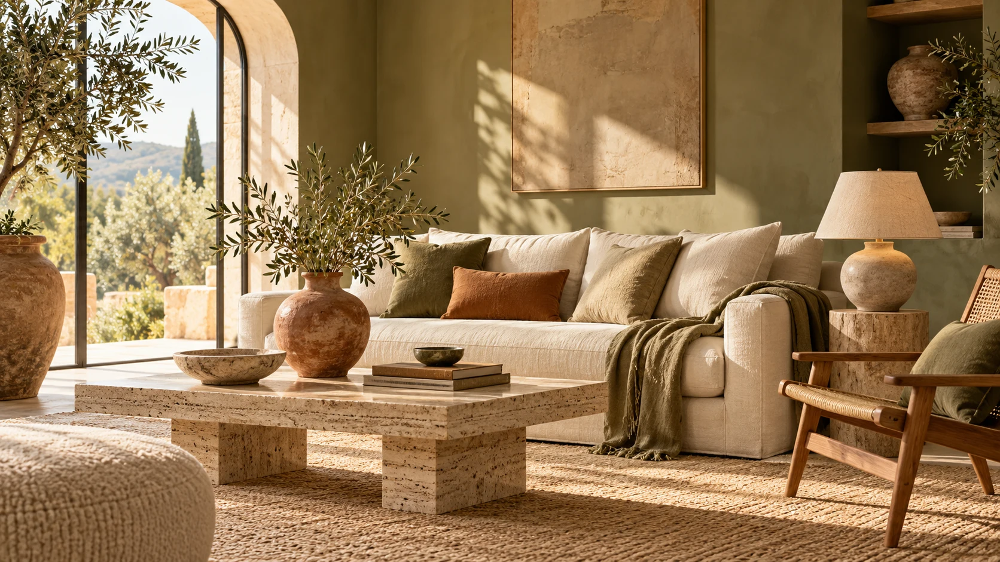

OBJECTS FOR A LIFE WELL LIVEDLet a room
Let a room
become home.
Natural textures. Thoughtful shapes. A collection of objects for the spaces that hold your everyday.
Explore by room ↗
A feeling for
every room.
Choose a space and explore a small, considered edit.
The living-room edit: a sculptural vase, a quiet light and a soft layer.
MAKE A LITTLE SPACE YOUR OWN
Build your
cosy corner.
Pick the finishing touches for your room. Add your chosen pieces together when it feels right.
Your selected pieces: R1,048.00
Room inspiration · Product dimensions and scale must be confirmed before ordering.
THE OBJECT COLLECTION
Little details.
Lasting feeling.
01 / EARTH
Sculptural ceramics
Shapes that bring a little character to shelves, tables and quiet corners.
02 / LIGHT
A softer evening
Consider lighting as part of how a room feels, alongside its practical requirements.
03 / TEXTURE
Layers to live with
Simple woven textures give familiar spaces a different feeling.